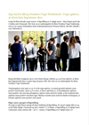
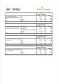
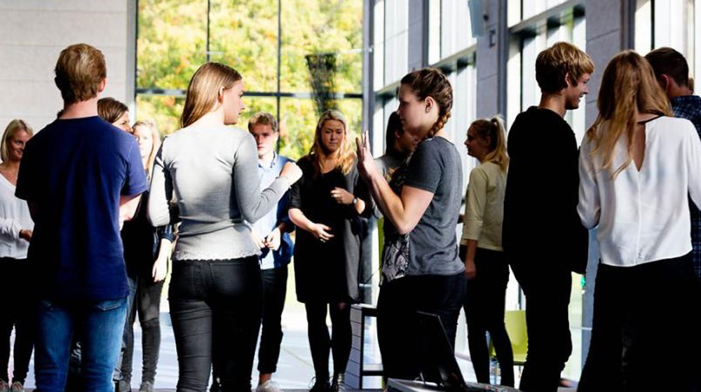

FP9 Dansk, skriftlig fremstilling
Du skal vælge en af disse opgaver:
1 På hjul i skoven
2 Begrænset af køn?
3 Hvor der er en vilje, der er der også en vej!
4 Noget at kæmpe for?
Du skal skrive den valgte opgaves nummer og titel på din besvarelse.
1 På hjul i skoven
2 Begrænset af køn?
3 Hvor der er en vilje, der er der også en vej!
4 Noget at kæmpe for?
Du skal skrive den valgte opgaves nummer og titel på din besvarelse.
Før du skriver
Til eleven
Til denne prøve i skriftlig fremstilling har du adgang til internettet.
Du må ikke kommunikere eller dele dine dokumenter med andre under prøven.
Nogle af opgaverne kræver, at du skal søge informationer på internettet til brug for din besvarelse. I andre opgaver er det en åben mulighed at søge fakta og inspiration.
Layoutet af din besvarelse indgår i vurderingen. Tænk derfor på, at du udover tekst kan inddrage fx billeder og andre grafiske virkemidler.
Hvis du i din besvarelse anvender informationer, citater, billeder eller andre grafiske virkemidler hentet fra internettet, skal du til sidst i besvarelsen angive de væsentlige kilder.
Din besvarelse vurderes på både indhold, sprog og form. Se vurderingskriterierne nedenfor.
God arbejdslyst!
Vurderingskriterier til eleven
Din skriftlige besvarelse bliver vurderet ud fra en helhedsvurdering af 3 dimensioner: indhold, sprog og form.
Der gives én karakter.
| Vurderingens 3 dimensioner | Vurderingskriterier | Forklaring |
| Tekstens indhold | Opgavens krav | I hvor høj grad opfylder din besvarelse de krav, der er stillet i opgaven? |
| Anvendelse af genre | I hvor høj grad viser din besvarelse sikkerhed i at skrive i genren? | |
| Disponering | I hvor høj grad er din besvarelse hensigtsmæssigt disponeret så der er tydelig sammenhæng i din tekst mellem opgavekrav og genre? | |
| Søgning og brug af internet | Hvis der i opgaven er stillet krav om, at du skal anvende internettet til at søge inspiration eller information, eller det i øvrigt er relevant, vurderes det, hvordan – og i hvor høj grad du kritisk har bearbejdet, anvendt og gjort til eget i din besvarelse. | |
| Kildeangivelse | Hvis der i opgaven er stillet krav om, at du skal anvende internettet, vurderes det, i hvor høj grad de væsentligste kilder fremgår korrekt i besvarelsen. | |
| Tekstens sprog | Sprog | I hvor høj grad er sproget i din besvarelse forståeligt, klart og varieret både med hensyn til ordforråd og syntaks? |
| Retskrivning og tegnsætning | I hvor høj grad er der i din besvarelse anvendt korrekt stavning, og er din tegnsætning sikker? | |
| Tekstens form | Orden og layout | I hvor høj grad fremmer dit layout kommunikationen i forhold til det medie og den genre, du skriver i? |
1 På hjul i skoven
Kilde: Mid Zealand Production
Mountainbikesport dyrkes af forskellige aldersgrupper og er populært i Danmark.
En trykt avis har planlagt et temanummer for unge om udendørs sportsgrene. Forestil dig, at du er journalistpraktikant og har overværet mountainbikeløbet.
|
Skriv en reportage fra mountainbikeløbet.
Som forberedelse til din reportage skal du se videoen og søge oplysninger om mountainbikesport. Din reportage skal indeholde:
|
2 Begrænset af køn?
Mange unge har i en undersøgelse givet udtryk for, at deres køn begrænser dem i at gøre det, de gerne vil.
Klik på ikonet, og læs artiklen Nye tal fra Maryfondens Unge Tænketank: Unge oplever, at deres køn begrænser dem.
|  |
Klik på ikonet, og læs undersøgelsen om køn og ligestilling.
|  |

Kilde: maryfonden.dk
|
Skriv et debatindlæg om unge og køn.
Som forberedelse skal du blandt andet læse artiklen Unge oplever, at deres køn begrænser dem og undersøgelsen om køn og ligestilling. I dit debatindlæg skal du:
Dit debatindlæg skal bringes på et site for unge. |
3 Hvor der er en vilje, der er der også en vej!
Kilde: dr.dk
I filmen Houdiniflugten fra Horsens Statsfængsel fortælles om Carl August Lorentzens flugt fra fængslet i 1949.
Forestil dig, at du er Carl August Lorentzen. I stedet for et julekort skriver du et længere brev til fængselsdirektøren.
|
Skriv det brev, som sendes til fængselsdirektøren i dagene efter flugten.
I brevet skal du blandt andet:
|
4 Noget at kæmpe for?
Kilde: www.paylease.com
Gennem tiden har mennesker kæmpet for ændringer af livsvilkår. Fx kampen for borgerrettigheder rundt om i verden, frihedskampen under 2. Verdenskrig og kampen for dyrevelfærd.
I dag påstås det, at unge udelukkende kæmper for likes og materielle goder.
|
Skriv et essay med titlen Noget at kæmpe for?
Som forberedelse til dit essay skal du søge informationer om personer eller grupper, der kæmper for noget, som du finder vigtigt. I dit essay skal du blandt andet:
|